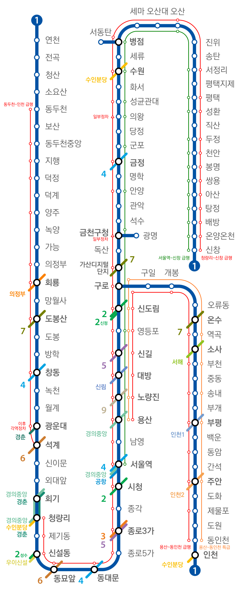
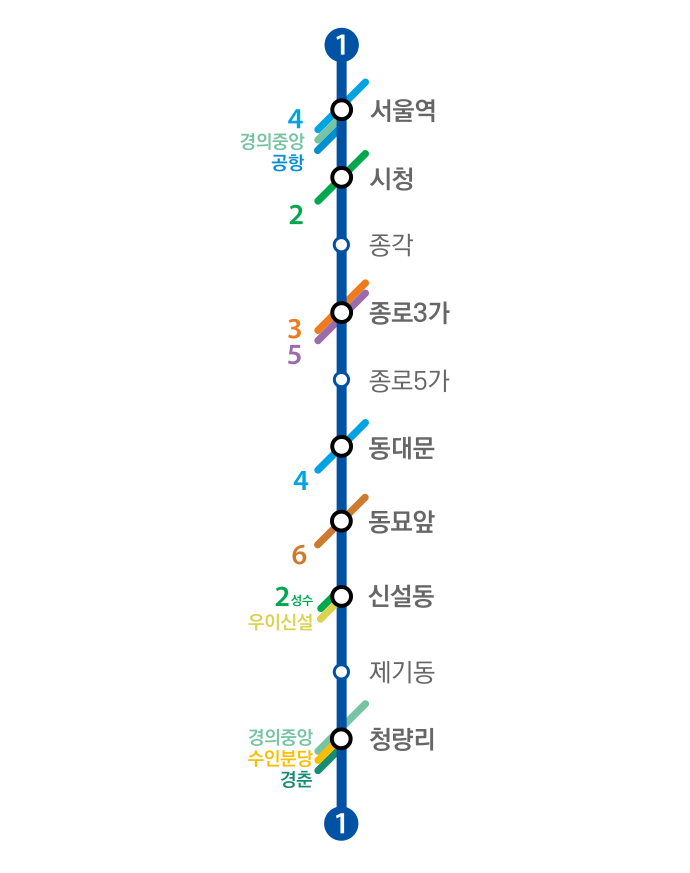

Korea Train Database
[추가 예정] 회사 정보
노선 정보
역 정보
OpenBve 애드온
노선 정보
수도권 전철 1호선
역 정보
[추가 예정] 1호선
OpenBve 애드온
1호선 경인선 구로급행
수도권 전철 1호선 | Seoul Metropolitan Subway Line Number 1
노선 최초 개통 날짜
|
1974년 8월 15일
신호 방식
|
ATS
사용 선로
|
경부2선
,
경인선
,
경원선
,
서울 지하철 1호선 [종로선]
목적
|
과포화 교통을 분산
,
일반 열차 대채
운영사
|
한국철도공사 KORAIL
,
서울교통공사
노선도
|
이 밑은 노선도입니다.

종점
|
신창역
,
인천역
,
연천역
방향 [종착역]
|
신창행
,
천안행
,
병점행
,
서동탄행
,
광명행
,
구로행
,
광운대행
,
동묘앞행
,
청량리
급행
,
서울역급행
,
영등포행
,
연천행
,
소요산행
,
동두천행
,
양주행
,
의정부행
,
용산
급행
,
용산
특급
,
인천행
,
동인천
급행
,
동인천
특급
,
부평행
,
부천행
급행
|
청량리 - 신창
급행
|
청량리 -
제기동
- 신설동 - 동묘앞 - 동대문 -
종로5가
- 종로3가 -
종각
- 시청 - 서울역 -
남영
- 용산 - 노량진 - 대방 - 신길 -
영등포
- 신도림 -
구로
- 가산디지털단지 -
금천구청(일부정차) - 안양
- 금정 -
의왕(일부정차)
-
성균관대
- 수원 -
병점
- 오산 - 서정리 - 평택 - 성환 -
두정
- 천안
- 봉명 - 쌍용
아산(천안아산)
- 탕정 - 배방
- 온양온천
- 신창
급행
|
서울 - 신창급행
|
서울역 -
영등포(서울역급행 정차) - 금천구청 - 안양
- 군포 - 의왕
- 수원
- 병점
- 서정리
- 평택 - 성환
- 두정
- 천안
- 봉명 - 쌍용 -
아산(천안아산)
- 탕정 - 배방 -
온양온천 -
신창
서울 지하철 1호선 | Seoul Metro Number Line 1
경인선, 경원선, 경부선의 경우 각 데이터베이스로 가서 확인해주시기 바랍니다.
노선 최초 개통 날짜
|
1974년 8월 15일
신호 방식
|
ATS [ATS-S2]
선로 수
|
2 [복선]
환승역
|
서
울
역
,
시청
,
종로
3가
,
동대문
,
동묘앞
,
신설
동역
,
청
량
리
표정속도
|
24.6km/h
통행방향
|
좌측통행
급전방식
|
직류 1500V
소요시간
|
20분
노선도
|
아래에 있는 이미지가 노선도입니다.

Website UI Copyright by X-Cube Train Team | 웹사이트 UI 저작권은 X-Cube 철도 팀에게 있습니다.